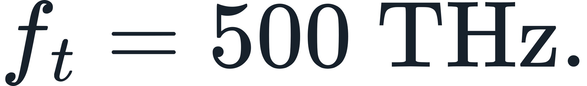
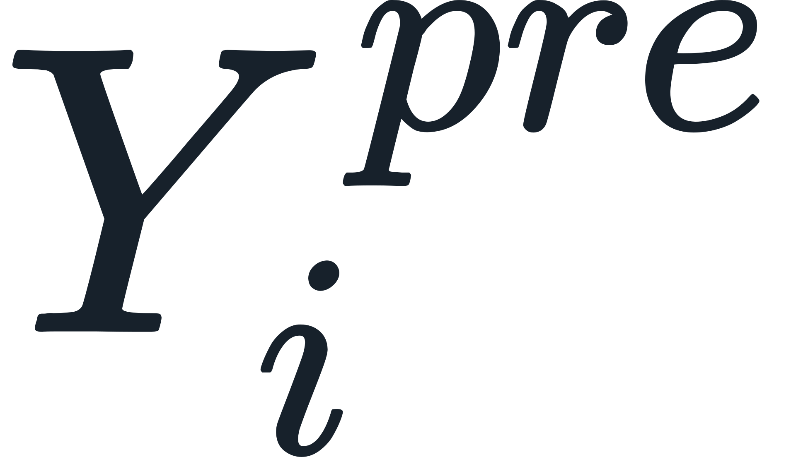
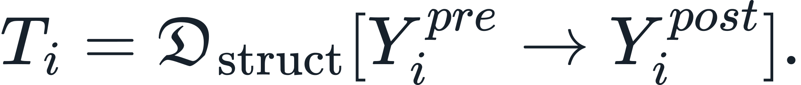
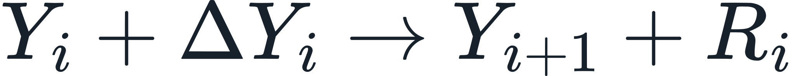

Continuum Paradigm — Phase-by-Phase Execution Guide
CURRENT-BUILD AUTHORITY: All active registered claims are adjudicated and closed at their declared scope. Terminal classes described in this document are execution semantics for posed inputs and do not denote unfinished canonical project work.
Canonical closure interpretation — upstream resolution required
A registered claim is certified closed when the record states what SEAM resolves upstream that produces the observation or makes the conventional description downstream. The required order is:
native complete structure → native relation/field/selector consequence → frozen result → conventional representation/comparator
For each registered claim the authoritative row-level linkage is SEAM_210_CLAIM_CERTIFICATION_REGISTER.md and the claim-specific record under Evidence/Claim_Certification/. Those records name the upstream mechanism, sealed execution/result, quantitative standing where applicable, scientific comparator, and exact boundary.
No-reduction rule (see
00_README.md). Structure in this archive is retained faceted and is never collapsed to a scalar. A faceted or symbolic form is a complete description of a resolved structure, not a deferred value. It does not license reading an unevaluated row as resolved: see the three-state status vocabulary (RESOLVED/EXCLUDED/NOT_EVALUABLE) in00_README.md.
Runner: Evidence/Runtime/locked_runner.py
Contract ID: LOCKED_RUNNER_R30_REFERENCE_CHECK_01
Purpose: one entry point that executes every declared phase in canonical order, verifies each against its sealed value where one exists, and reports a terminal per branch.
Canonical architecture and execution scope
The Continuum Paradigm uses one integrated architecture with distinct responsibilities:


ESAM is the mathematical-formalization lineage through which the ESIH structural principles are expressed in the SEAM mathematics.
The narrative definition states the physical meaning of a principle. The formalism supplies the complete mathematical state required to calculate that principle in a particular case:
The existence standard distinguishes possible and realized existence:
The Continuum is the physical domain. The Continuum Manifold is the retained and normalized record of observed or resolved portions of that domain:
Current quantitative execution scope
Architectural scope and executed numerical scope are recorded separately.
The atomic structural domain carries the fully explicit numerical admissibility implementation presently retained in the archive. Molecular, aggregate, electromagnetic, propagation, material, biological, and macroscopic domains inherit the same structural admissibility and interaction architecture through their declared native constructors.
Chemistry and biology retain the same structural architecture. B01 supplies an executed single-frequency light-transfer contract, receiver/emitter recursion, entropy-successor controls, explicit partnership controls, and a frozen bulk chemistry start; the heterogeneous full-apparatus field/entropy successor remains an unexecuted application binding.
Bond interaction architecture is retained where documented. Numerical bond lengths and dissociation energies enter the evidence standing when their native calculation, seal, and comparator record are present.
Macroscopic interaction and force architecture are retained where documented. Absolute SI force values and a numerical derivation of  enter the evidence standing through their own completed native execution and evidence records.
enter the evidence standing through their own completed native execution and evidence records.
Continued calculation expands quantitative coverage while preserving the same first-principles architecture.
How to read this document
Each phase below states five things and nothing else:
| field | meaning |
|---|---|
| Consumes | exactly what enters the phase |
| Operation | the declared transformation, by name |
| Produces | what leaves the phase |
| Terminal | the phase's own disposition string |
| Reads as | the misreadings this phase has actually attracted, and why they are wrong |
The Reads as field exists because the cold-review provenance records identify recurring misreadings at specific phases. Naming them at the phase where they occur keeps each correction attached to the state it governs.
Four rules that govern every phase
1. Faceted retention. A structure is described by its distinguishable aspects, retained separately. A symbol naming an aspect is part of a complete description. It is not a value awaiting computation.
2. Phase dispositions retain their declared meaning. RESOLVED, EXCLUDED, and NOT_EVALUABLE are distinct states. Exclusion is recorded only where a declared predicate has actually rejected a candidate. NOT_EVALUABLE records that the required native operation has not executed for that row.
3. Native first, comparator after. Native quantities are produced without reference to any conventional or measured value. Comparators enter only after the native result is frozen, and only to test it. A comparator may never define a native quantity.
4. Notation is not a handoff. An expression such as  names an evaluation/facet of the retained state unless this guide or a provenance binding explicitly declares a separate consumes / operation / produces boundary. Parentheses, brackets, arrows, or functional notation alone do not create another runtime stage.
names an evaluation/facet of the retained state unless this guide or a provenance binding explicitly declares a separate consumes / operation / produces boundary. Parentheses, brackets, arrows, or functional notation alone do not create another runtime stage.
PHASE 0 — Environment capture
Consumes: nothing
Operation: record interpreter and numeric library versions
Produces: Python, NumPy, SciPy, platform
Terminal: ENV_CAPTURED
Reference execution:
python 3.12.3 numpy 2.4.4 scipy 1.17.1
The archive's pinned reference environment is Python 3.13.5 / NumPy 2.3.5 / SciPy 1.17.0. Sealed values reproduce exactly on both. That cross-environment match is itself evidence: the sealed results are properties of the declared mathematics, not artefacts of one numeric stack.
Reads as: nothing. Recorded so that a reproduction on a third environment can be compared.
PHASE 1 — Atomic shell resolution
Consumes: Z in 1..128;
Operation: by strict fill-before-skip (Technical Foundations §5.3.3), stated as a closed-form piecewise function
Produces: 128 resolved shell states
Terminal: ATOMIC_SHELL_STATE_RESOLVED
Z=26 -> [2, 8, 16, 0, 0, 0, 0] Z=29 -> [2, 8, 18, 1, 0, 0, 0] Z=74 -> [2, 8, 18, 32, 14, 0, 0] Z=79 -> [2, 8, 18, 32, 18, 1, 0] Z>=129 -> not admissible
Shell closures fall at .
Reads as: the two numbers 118 and 128 are frequently conflated. 128 is the architectural admissibility count — the capacity vector sums to 128 and the fill rule is defined to 128. 118 is the empirical comparison range, because 118 elements are presently known. Neither number is a rounding of the other. Statements about admissibility use 128; statements about comparison against observation use 118.
PHASE 2 — Atomic entropy properties
Consumes: resolved shell states from Phase 1 Operation:
S_config = sum_n ln C(c_n, N_n) S_field = ln E - (1/E) sum_n N_n ln(N_n / V_n), V_n = (4pi/3)[n^3 - (n-1)^3]
Produces: both quantities per element
Terminal: ATOMIC_ENTROPY_RESOLVED
Sealed: MATCH (5 of 5)
Fe S_config = 5.030437921392435 S_field = 4.701856904349989 Cu S_field = 4.873141663921901 W S_field = 6.057692190418670 Au S_field = 6.177105205898307
Reads as:  means only the spatial field entropy defined above. A shell-fraction/Bernoulli fill quantity is not
means only the spatial field entropy defined above. A shell-fraction/Bernoulli fill quantity is not  and has no canonical authority.
and has no canonical authority.
PHASE 3 — Signed shell-field operator
Consumes:  over
over  Operation: backward second difference,
Produces: sign disposition at every evaluable
Operation: backward second difference,
Produces: sign disposition at every evaluable Z
Terminal: SHELL_SIGN_LAW_CLOSED
evaluable states (Z = 3..128) : 126 violations : 0 shell openings : Z = 1, 3, 11, 29, 61, 79, 111
The stencil is the claim. The same data under the three conventions gives:
| stencil | violations |
|---|---|
| backward | 0 |
| forward | 11 |
| centered | 12 |
Reads as: two errors have occurred here. First, an audit reported "centered, 117/117" — the values were in fact generated with the backward stencil and mislabelled; the true centered stencil gives 12 violations. Second, the evaluable domain has been stated as 116 states over . The fill rule is defined to 128, so the domain is  and there are 126 evaluable states.
and there are 126 evaluable states.
Non-genericity. This result is not an arithmetic identity. Tested against 2000 systems with randomised capacity vectors and randomised shell volumes, 2000 of 2000 produce violations. Zero violations is a joint property of the canonical capacity vector and the annular geometry; perturb either and it fails.
PHASE 4 — Retained R6 bounded-band replay
Consumes: resolved shell states; NUBASE2020 as the retained R6 comparator
Operation: execute the certified nuclear formation-envelope construction and reproduce its containment result
Produces: a provenance/replay result only
Terminal: HISTORICAL_EPN_CONTAINMENT_REPLAY_PASS when the retained R6 result reproduces
containment : 2549 / 2549 experimental states band cells (Z = 1..118) : 9822 observed span cells : 2608 mean band width / observed span : 3.766
PHASE 5 — Current nuclear relational formation closure
Consumes: (Z,N) and the frozen  kernel
Operation:
Produces: the current lower and upper nuclear formation/admissibility selectors for Z=1..128
Terminal:
kernel
Operation:
Produces: the current lower and upper nuclear formation/admissibility selectors for Z=1..128
Terminal: NUCLEAR_FORMATION_ENVELOPE_CLOSED
The certified locked formation-envelope evidence is the numerical authority for this phase. Its empirical positive-control surface admits 2549/2549 evaluated-experimental states, and its forward sweep terminates natively for 128/128 elements.
The two interior selectors ( ,
,  ) are additive downstream operations. R229 is a locked falsification of one proposed entropy binding and does not alter the R226 outer formation envelope.
) are additive downstream operations. R229 is a locked falsification of one proposed entropy binding and does not alter the R226 outer formation envelope.
Admissibility rule for any future  binding. Composition universality must follow from the native construction. Equivalence-principle measurements may test that consequence; they may not be used to fit or define the coefficients of
binding. Composition universality must follow from the native construction. Equivalence-principle measurements may test that consequence; they may not be used to fit or define the coefficients of  . Fitting them would make the comparator define the native operator, which the directionality rule prohibits.
. Fitting them would make the comparator define the native operator, which the directionality rule prohibits.
Result matrix
| # | Phase | Branch | Terminal | Sealed |
|---|---|---|---|---|
| 0 | Environment capture | meta | ENV_CAPTURED |
— |
| 1 | Atomic shell resolution | atomic | ATOMIC_SHELL_STATE_RESOLVED |
— |
| 2 | Atomic entropy properties | atomic | ATOMIC_ENTROPY_RESOLVED |
MATCH 5/5 |
| 3 | Signed shell-field operator | atomic | SHELL_SIGN_LAW_CLOSED |
0/126 violations |
| 5 | Current nuclear relational formation closure | structural | NUCLEAR_FORMATION_ENVELOPE_CLOSED |
R226 frozen |
| 6 | Molecular variational field | molecular | VARIATIONAL_FIELD_RESOLVED |
MATCH |
| 7 | Two-stage pair relation | molecular | SEAM_RESOLVED_STATE_PAIR_RELATION_CLOSED |
MATCH 3/3 |
| 8 | Retained mass state | mass | RETAINED_MASS_STATE_RESOLVED |
— |
| 9 | Macro source continuation | macro | CURRENT_CANONICAL_EXECUTION |
governed by current interaction and projection chain |
All sealed values reproduce: TRUE — on an environment differing from the pinned reference in interpreter and both numeric libraries.
Misreading index
Every entry below occurred during an independent cold review. Each is listed with the phase it arises at and the fact that resolves it.
| # | Misreading | Phase | Resolution |
|---|---|---|---|
| 1 | 116 evaluable states for the sign law | 3 | fill rule runs to 128; domain is |
| 2 | "centered stencil gives 0 violations" | 3 | those values were backward; centered gives 12 |
| 3 | 2 | verify the spatial field-entropy definition and frozen evaluation domain | |
| 4 | 118/118 containment reads as precision | 4 | containment is scope; width ratio is 3.766 |
| 5 | Nuclear source binding mismatch | 5 | use the current |
| 6 | fixed-support run treated as the variational result | 6 | does not imply |
| 7 | equal |
6 | ; the relational coordinate is retained |
| 8 | read as three unpopulated inputs | 7 | faceted description of one resolved consequence |
| 9 | terminal from one branch applied to another | 7 | shared notation is not shared operator scope |
| 10 | macro stop declared at an unbound |
9 | |
| 11 | atomic weight expected as the mass state | 8 | mass state is faceted; the scalar is a lossy projection |
| 12 | absence concluded from a text search | all | search is navigation only; read the section |
| 13 | 6–7 | Hamiltonian facet/evaluation of retained |
Contract
LOCKED_RUNNER_R30
- every phase executes in canonical order; none may be skipped or reordered
- every phase reports consumes / operation / produces / terminal / sealed check
- each phase reports the counts appropriate to its declared state vocabulary; Phase 5 reports evaluated / resolved / excluded / not_evaluable without reclassifying unevaluated rows as eliminated
- a phase producing no numeric result reports its disposition, not a clean exit
- environment is captured; sealed values must reproduce across environments
- comparators enter only after the native result of their phase is frozen
Invocation:
python3 Evidence/Runtime/locked_runner.py # full transcript
python3 Evidence/Runtime/locked_runner.py --json out.json # machine-readable matrix
python3 Evidence/Runtime/locked_runner.py --quiet --json out.json
PHASE 7A — Single-frequency receiver/emitter chain and chemistry handoff
Input: a resolved emitter state, a complete receiver molecular/material state, and a frozen native periodicity coordinate.
For the B01 controlled run,

- Evaluate the receiver under the incoming complete excitation.
- If native structured transfer is nonzero and compatible, retain the resulting excited receiver state.
- Record any simultaneous local field/entropy/thermal response without presuming attenuation, augmentation, or frequency change.
- Use the resulting excited receiver state as the emitter for the next link under the same transfer relation.
- At the chemistry handoff, retain the actual atomic partnership graph of the excited molecular composition.
- Reevaluate existing partnerships under the excited field using the complete entropy selector.
- Classify each calculated relation as retained, shifted, or lost/split-favored only from the entropy result.
- After any accepted relational change, recompute the entire molecular field/entropy state before continuing.
- Stop only at a structural terminal. Apply energy projection afterward.
Current B01 execution boundary: the current runtime does not provide the heterogeneous N-node complete-field/entropy evaluator needed for the chlorophyll + 6CO2 + 6H2O excited graph. Do not substitute R4 or preselect products.
Universal interaction execution cycle
For every SEAM interaction, irrespective of scale or conventional domain:
- Freeze the complete incoming structure

. - Apply or receive the admissible perturbation .
- Resolve the complete resulting structure .
- Compute the native structured transfer:

- Re-resolve entropy and relational closure in the post-perturbation state.
- If the relational state changes, treat the resulting complete state as the next pre-perturbation structure.
- Repeat until the post-perturbation structure no longer changes under the admitted input and retained state history.
Canonical shorthand:
This cycle applies equally to propagation, material reception, atomic interaction, molecular restructuring, thermal response, and subsequent composite-state evolution. No separate domain operator replaces it.
PHASE 10 — Fixed thermodynamic stochastic-field accounting
Consumes: frozen complete-state confinement cases A/B/C; R49 event law; H2O atomic-invariance control.
Operation: execute

over A→B→C→A, preserving complete state facets and explicit output accounting.Produces: retained successor records, explicit  , entropy/field deltas, relational-change record, exact-return adjudication.
, entropy/field deltas, relational-change record, exact-return adjudication.
Terminal: THERMODYNAMIC_STOCHASTIC_FIELD_ACCOUNTING_CLOSED_FIXED_EXAMPLE.
Sealed result: PASS; primary/replay byte-identical.
This phase does not calibrate downstream temperature, pressure, heat, latent heat, or material-specific phase thresholds.
PHASE 11 — Persistent atom ancestry resolution
Consumes: persistent atom identities, observed/model structural labels, explicit evidence bindings, exported-entity constituent record.
Operation: bind labels to persistent identities only through proven beta_t; propagate identity continuously; resolve export ancestry only when every constituent binding is unique and complete.
Terminal: ANCESTRY_RESOLVED or NOT_EVALUABLE_IDENTITY_BINDING_INCOMPLETE.
The R49 OEC case currently reaches the latter terminal.
PHASE 12 — Fixed thermal Hamiltonian projection
Consumes: two resolved complete pair states at selected and separated native relation coordinates; frozen downstream temperature.
Operation: evaluate only after native state resolution.
Terminal: THERMAL_HAMILTONIAN_COMPONENT_CLOSED_FIXED_EXAMPLE.
The phase does not emit total bond energy or a general transfer currency.
PHASE 13 — Three-node complete-state deterministic evaluation
Consumes: retained atomic shell states and frozen three-node relational geometry.
Operation: evaluate the unchanged complete entropy law using shell-boundary-partitioned x/y quadrature, exact piecewise z integration, and exact canonical overlap normalization.
Controls: Cu3 retained-Cu2 successor comparison; heterogeneous H-H-O exact-contact zero-overlap control.
Terminal: NNODE_THREE_NODE_COMPLETE_STATE_NUMERICAL_FIXED_EXAMPLE_CLOSED.
Scope: fixed three-node numerical qualification. Larger-N states require separate convergence qualification; no new physical term is authorized.
R56 — fixed faceted structured-transfer closure
Locked run STRUCTURED-TRANSFER-FACETED-01 executes the canonical interaction object
without scalar reduction. The fixed example retains numeric entropy/coupling/confinement/count facets, the native distance vector, and the categorical relational transition. Direct reversal is exact. Over the closed A→B→C→A cycle every additive facet returns zero componentwise and the categorical relational state returns to its original value.
The run also falsifies promotion of  to the universal transfer object: the B→C transition contains a relational category change, overlap-count change, coupling change, and vector geometry change that are not encoded by the entropy scalar alone.
to the universal transfer object: the B→C transition contains a relational category change, overlap-count change, coupling change, and vector geometry change that are not encoded by the entropy scalar alone.
Standing: the universal native transfer object is the faceted structured difference and is CLOSED as a fixed executable example. A universal scalar transfer magnitude is not a missing first-principles object. Scalar quantities are admissible only through independently declared downstream projections such as the R53 thermal Hamiltonian component.
Evidence: Evidence/Locked_Runs/STRUCTURED-TRANSFER-FACETED-01/.
R57 — pair/event time-metrology boundary closure
Locked run PAIR-TAU-EVENT-METROLOGY-01 distinguishes physical evolution time from static selected-state comparison. The native resolver remains
An actual event carrying  resolves exactly to one second. The static Cu-Cu selected/reference states from R53 contain no declared physical evolution interval and therefore return
resolves exactly to one second. The static Cu-Cu selected/reference states from R53 contain no declared physical evolution interval and therefore return NOT_EVALUABLE_NO_PHYSICAL_INTERVAL;  is not inferred.
is not inferred.  , entropy difference, frequency, dimensional distance, and wall-clock runtime are prohibited substitutes.
, entropy difference, frequency, dimensional distance, and wall-clock runtime are prohibited substitutes.
Standing: time/event mapping formalism CLOSED. A numerical molecular-event interval requires explicit Cs-count evidence for that event. Static pair-state comparison alone does not define a pair clock.
Evidence: Evidence/Locked_Runs/PAIR-TAU-EVENT-METROLOGY-01/.
R231 canonical nuclear authority lock
Current nuclear formation authority is the certified  four-selector contract.
four-selector contract.